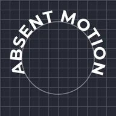

Teks Ikut Laluan

Meletakkan teks di sepanjang lengkok, bulatan atau garis luar lapisan betul-betul di bawahnya, huruf demi huruf, dengan bentuk huruf, fon dan emoji teks dikekalkan.
Pilih Path: lengkok atau bulatan di sekeliling lapisan teks (seret titiknya pada kanvas atau taip nilainya), atau Layer Below supaya teks mengikut apa yang berada betul-betul di bawahnya dalam senarai lapisan: laluan pen, bentuk, lakaran sesuatu lukisan atau huruf teks lain. Pada bulatan atau mana-mana garis luar tertutup, Position 50 % meletakkan teks di tengah bahagian atas, dibaca dari kiri ke kanan, dan 0 % ialah bahagian bawah; apabila Reverse Path dihidupkan, 0 % meletakkan teks di sepanjang bahagian bawah, masih dibaca dari kiri ke kanan. Laluan yang mempunyai beberapa bahagian diikuti satu bahagian demi satu bahagian. Teks pada laluan tidak dibalut mengikut kotak teksnya: mulakan baris baharu sendiri untuk baris kedua.
Tetapan
| Tetapan | Jenis | Julat | Lalai |
|---|---|---|---|
| Laluan | Pilihan | Lengkok, Bulatan, Lapisan Bawah | Lengkok |
| Kedudukan | Nombor | -500% hingga 500% | 50% |
| Jajar | Pilihan | Kiri, Tengah, Kanan | Tengah |
| Anjakan Garis Dasar | Nombor | -2000 hingga 2000 | 0 |
| Putar Huruf | Hidup atau mati | – | Hidup |
| Terbalikkan Laluan | Hidup atau mati | – | Mati |
| Mula | Titik (X, Y) | -20000 px hingga 20000 px | -300 px, 80 px |
| Kawalan 1 | Titik (X, Y) | -20000 px hingga 20000 px | -200 px, -120 px |
| Kawalan 2 | Titik (X, Y) | -20000 px hingga 20000 px | 200 px, -120 px |
| Tamat | Titik (X, Y) | -20000 px hingga 20000 px | 300 px, 80 px |
| Pusat | Titik (X, Y) | -20000 px hingga 20000 px | 0 px, 0 px |
| Jejari | Nombor | 1 hingga 20000 | 220 |